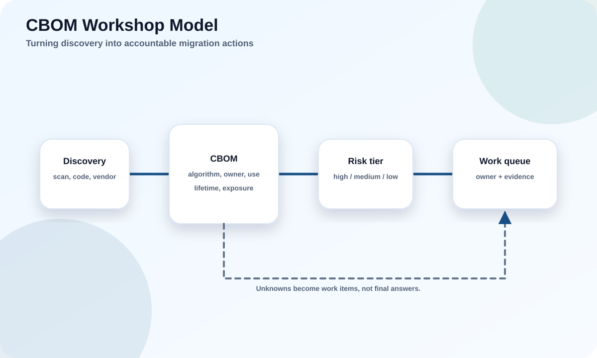

Concrete example
A CBOM entry for a code-signing workflow records signer, HSM, algorithm, timestamping service, artifact formats, verifiers, key rotation policy, and PQC readiness.
A hands-on module for creating a cryptographic bill of materials, classifying crypto use, and converting discovery into migration actions.
Educational reference only. Production cryptography decisions need current standards checks, vendor validation, security review, interoperability testing, and rollback planning.

How discovery inputs become a cryptographic bill of materials and then become owned remediation work.
A cryptographic bill of materials, or CBOM, is an inventory of cryptographic assets and uses. It is related to a software bill of materials, but focuses on algorithms, keys, certificates, protocols, libraries, hardware, and trust relationships.
A useful CBOM captures enough information for risk decisions. At minimum, record system, owner, crypto job, algorithm, parameter or key size, library or product, protocol, certificate chain, key custody, data lifetime, exposure, and migration status.
The CBOM should be maintained because applications, certificates, vendors, and libraries change. A one-time spreadsheet becomes stale quickly.
A CBOM entry for a code-signing workflow records signer, HSM, algorithm, timestamping service, artifact formats, verifiers, key rotation policy, and PQC readiness.
Do not list only libraries. Certificates, keys, protocols, and hardware dependencies are just as important.
A CBOM is the evidence base for PQC decisions.
The inventory must identify ownership and action. A technically perfect row without an accountable owner does not lead to migration. A row without data lifetime cannot be prioritized.
Algorithm names must be exact. 'TLS' is not enough. Record key exchange, certificate signature, protocol version, library, certificate chain, and any pinned or legacy clients.
Confidence should be recorded. Some data may come from automated scans; some may be vendor statements; some may be manual review. Confidence helps avoid false certainty.
Instead of 'uses SSL,' write 'external API, TLS 1.3, ECDHE key exchange, ECDSA P-256 certificate, nginx/OpenSSL version, mobile and browser clients, owner Team A.'
Do not hide unknowns. Unknowns are work items.
Useful inventory fields drive owners, priority, and next action.
Discovery can use network scans, certificate inventory, source-code searches, dependency analysis, configuration review, vendor questionnaires, HSM/KMS exports, cloud asset data, and architecture interviews.
No single method is complete. Network scans may miss offline signing systems. Source searches may miss vendor appliances. Vendor questionnaires may miss real configuration. Combine methods.
Discovery should also find old assumptions: fixed key lengths, certificate parser limits, pinned certificates, custom cryptography, and undocumented fallback.
A scanner finds public TLS endpoints, but an architecture interview discovers an offline root used for firmware signing.
Do not trust only automated tools. Human workflow review finds signing and key-custody paths.
Use multiple discovery methods and record confidence.
A CBOM becomes useful when it produces actions. Actions include test hybrid TLS, update schema size, ask vendor for roadmap, add certificate-chain monitoring, replace weak algorithms, create exception, or schedule device replacement.
Each action should have owner, target date, dependency, evidence requirement, and rollback plan where relevant.
The migration dashboard should show coverage, risk tiers, blockers, completed tests, exceptions, and next wave candidates.
A CBOM row for an old VPN becomes an action: verify vendor hybrid support, test client compatibility, prepare rollback, and update algorithm policy.
Do not let the CBOM become passive documentation. It must drive migration work.
Inventory without action is not a migration program.
These are practical exercises. Read the challenge, decide your answer, then reveal the recommended answer and compare.
Challenge: For an external API, name the minimum fields.
Recommended answer: Owner, endpoint, protocol, key exchange, certificate signature, library/product, client population, data lifetime, exposure, test status, and next action.
Challenge: Where might automated scans miss crypto?
Recommended answer: Offline signing systems, embedded devices, HSM workflows, vendor appliances, and custom key wrapping.
Challenge: A row says 'algorithm unknown.' What next?
Recommended answer: Assign owner and discovery method; unknown is not acceptable as final state.
Pick an answer. The page will mark the correct answer and keep score.
Use these as the standards trail before production decisions.
NIST CSRC Post-Quantum Cryptography ProjectNIST FIPS 203: ML-KEMNIST FIPS 204: ML-DSANIST FIPS 205: SLH-DSANIST HQC selection announcementNCCoE Migration to Post-Quantum CryptographyNSA CNSA 2.0 guidanceThis module is intentionally lesson-based, not a glossary. Read the explanation, inspect the diagram, review the example and pitfall, then use the use-case labs to apply the concept.
Use the side navigation to jump, the Top button on mobile, and the knowledge check to test retention.
This is educational material, not production cryptographic approval.